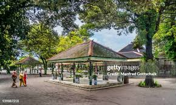
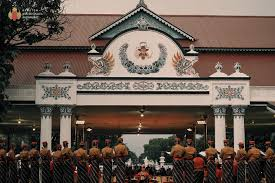
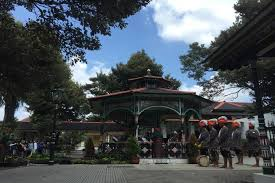
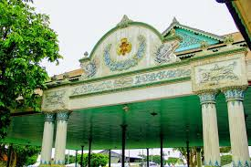
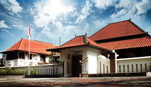

JogjaKita sangat informatif dan tampilannya memukau. Sukses terus!
Kraton Ngayogyakarta
Keraton Ngayogyakarta Hadiningrat didirikan oleh Sri Sultan Hamengkubuwono I pada tahun 1756, menyusul Perjanjian Giyanti yang membagi Kesultanan Mataram. Terletak di jantung Kota Yogyakarta, keraton ini menjadi pusat pemerintahan, budaya, dan spiritualitas masyarakat Jawa. Tata letaknya mengikuti filosofi Jawa yang menghubungkan Gunung Merapi, Kraton, dan Laut Selatan sebagai poros sakral.
Selain menjadi kediaman resmi Sultan Yogyakarta, Keraton juga berfungsi sebagai museum yang menyimpan berbagai koleksi pusaka, artefak kerajaan, serta menjadi tempat penyelenggaraan upacara adat seperti Grebeg Maulud dan Sekaten. Keraton masih aktif hingga kini dan terbuka untuk kunjungan wisatawan sebagai bagian dari pelestarian budaya Jawa.
Harga Tiket Masuk
- Wisatawan Domestik: Rp 15.000
- Wisatawan Mancanegara: Rp 30.000
- Tambahan Guide: Rp 50.000
Gallery




Museum Sonobudaya
Museum Sonobudoyo didirikan pada 6 November 1935 sebagai pusat pelestarian budaya Jawa, Bali, dan Lombok. Awalnya dibentuk oleh Java Instituut—lembaga kebudayaan Hindia Belanda—museum ini menyimpan koleksi etnografi, arkeologi, seni, serta manuskrip kuno yang kaya akan nilai sejarah.
Terletak di kawasan pusat Kota Yogyakarta, museum ini dikenal sebagai salah satu museum terlengkap di Indonesia dalam bidang budaya Jawa. Gedung utamanya dirancang dengan gaya arsitektur tradisional Jawa yang menyerupai pendopo. Museum Sonobudoyo juga rutin menyelenggarakan pertunjukan wayang kulit dan kegiatan edukasi budaya untuk umum.
Harga Tiket Masuk
- Anak-anak: Rp 5.000
- Dewasa: Rp 10.000
- Wisatawan Mancanegara: Rp 20.000
Gallery

Follow Us
Stay connected with us on social media!
Benteng Vredeburg
Benteng Vredeburg dibangun oleh Belanda pada tahun 1760 atas perintah Gubernur VOC, Nicolaas Harting, sebagai markas militer yang berfungsi mengawasi Keraton Yogyakarta. Awalnya berbentuk sederhana dari kayu dan tanah, kemudian diperkuat menjadi bangunan permanen pada tahun 1787 dengan nama Fort Vredeburg, yang berarti "Benteng Perdamaian."
Setelah kemerdekaan Indonesia, benteng ini sempat difungsikan oleh militer sebelum dialihfungsikan menjadi museum pada tahun 1980-an. Kini, Museum Benteng Vredeburg menjadi salah satu destinasi sejarah penting di Yogyakarta, menampilkan diorama perjuangan bangsa Indonesia serta koleksi peninggalan kolonial dan kemerdekaan.
Harga Tiket Masuk
- Weekday(Senin-Kamis) : Rp15.000
- Weekend(Jumat-Minggu)
- 08:00-15:30 : Rp 20.000
- 16:00-22:00 : Rp 25.000
- wisatawan Mancanegara: Rp 30.000
Gallery
Follow Us
Stay connected with us on social media!
Follow Us
Stay connected with us on social media!